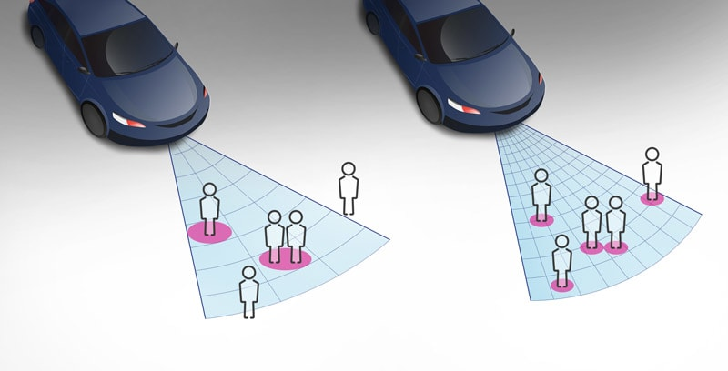
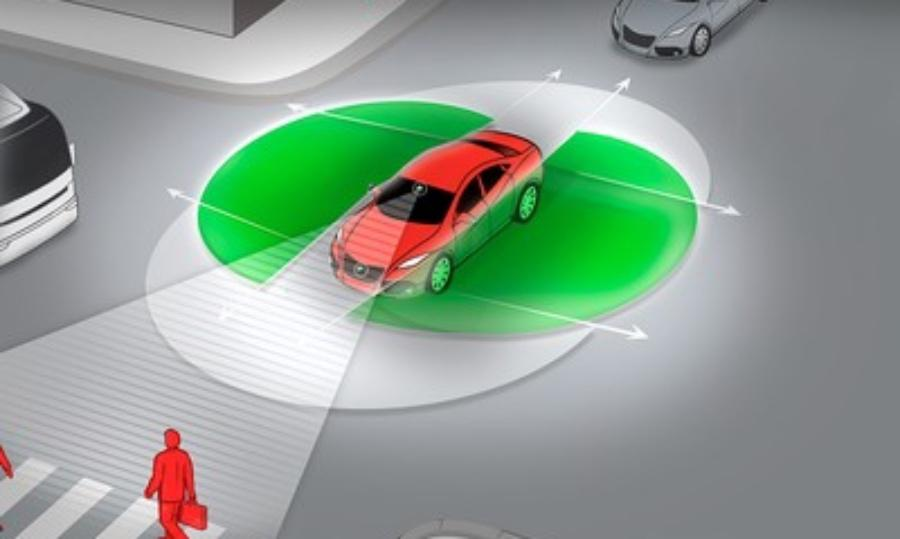

Sensor LiDAR

Constantemente girando, utiliza lasers para gerar uma imagem em 360 graus em volta do carro.
O Radar mede a distância do carro até possíveis obstáculos, podendo assim evitá-los.

Constantemente girando, utiliza lasers para gerar uma imagem em 360 graus em volta do carro.
Usa uma grande quantidade de imagens para encontrar a distância até vários objetos. As câmeras dos carros autônomos também detectam placas, semáforos e ajuda reconhecer pessoas.
Tem as mesmas funções que os outros sensores, sendo que auxiliam um a outro a gerar as imagens em 360 graus.